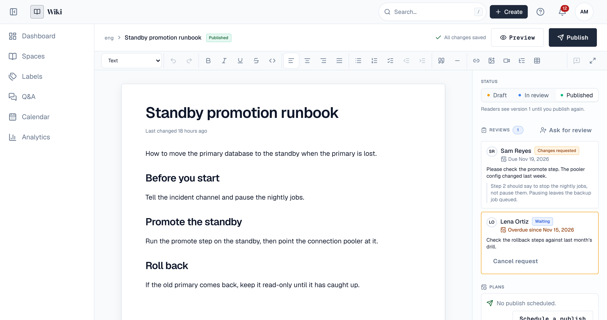
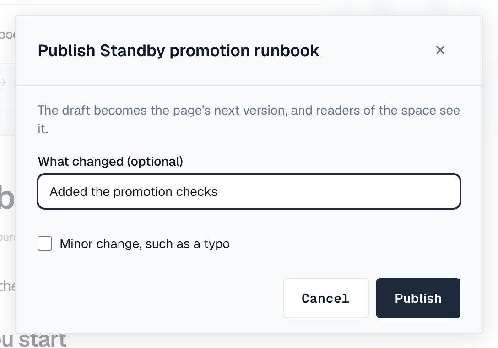
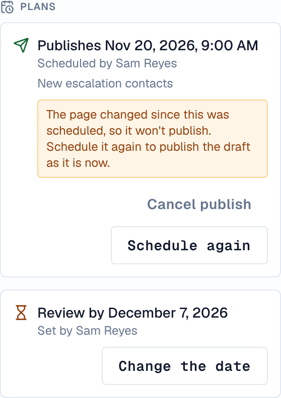

1. Overview
Every page has a draft that the people who edit it change together, and versions that readers see. Editing never changes what readers see: the draft becomes the next version only when someone publishes it. Opening a page you may edit (the space's Editor and Admin roles) opens it in the editor; everyone else gets the reading view.

2. Status
Page details, beside the page (under it on a phone), shows the page's status. Pick another one to change it:
| Status | Who sees the page |
|---|---|
| Draft | Only people who can edit pages in the space. New pages start here. |
| In review | The same as a draft: a sign for the other editors that the page is waiting to be checked. See Reviews. |
| Published | Everyone who can read the space, at the latest version. |
| Archived | Only people who can edit pages, like a draft: the page is kept, out of readers' way. |
Picking Published opens the publish dialog, because publishing always makes a version. Under the status a line says what readers see now: nothing until the page is published, or the version they get until you publish again.
3. Saving as you type
There is no Save button. Every change is saved within moments, and the top of the editor says where it stands:
| It says | Meaning |
|---|---|
| All changes saved | The server has stored every change you made. |
| Saving… | Changes are on their way. |
| Offline. Your changes are kept in this tab and saved when the connection returns. | You can keep typing; nothing is lost while the tab stays open. |
| Editing stopped | The page can't be edited from this tab any more (it was deleted, your access changed or your session ended). The message says what to do. |
If you leave the page before everything is saved, the Wiki keeps sending your changes in the background and warns you before you close the site. See Editing together for working on a page with other people.
4. Preview
Preview at the top shows the draft as readers will see it once you publish, with heading and figure numbers. Edit goes back to the editor.
5. Publish a version
- Select Publish — At the top of the editor, or Published under the status.
- Say what changed (optional) — A short note, such as "Fixed the escalation steps", shown with the version in the page's history.
- Tick Minor change, such as a typo if it is one — People watching the page aren't told about a minor change.
- Select Publish — The draft becomes the page's next version: version 1, 2, 3 and so on. The dialog waits until your latest changes are saved first.

- A page can only be published under published pages: publish the page above it first.
- If nothing changed since the last version, there is nothing to publish and the Wiki says so.
- Publishing tells the people who watch the page (unless it was minor) and the people the new version mentions for the first time. See Profile & notifications.
- Your administrators can set a policy that a page needs an approved review before it is published.
6. Publish later
Under Plans in Page details, Schedule a publish publishes the draft as it is now at a time you pick, from a minute to a year ahead, as you, with an optional note and minor change box. Only members of the space who edit pages can schedule one, and only in the browser.
Any edit to the page after you schedule it, by you or anyone else, cancels the publish: the Wiki publishes exactly the draft you scheduled or nothing. Schedule once the draft is final. If the draft changed, Plans says so and offers Schedule again, and you get an alert at the time it would have published.
Change time moves the publish and Cancel publish drops it. A page has one scheduled publish at a time. Scheduled publishes show on the calendar. They are dropped when you sign out of your other sessions or change your password, and you get an alert when one couldn't be made.

7. Draft history
Between versions, the Wiki keeps snapshots of the draft: a couple of minutes after people stop editing, and every ten minutes while they keep going. Draft history in Page details lists the newest five, each with Open, Compare (with the snapshot before) and Restore; All draft snapshots opens the full list on the page's history page.
- Each snapshot names who edited since the one before (when you may see people in the space).
- Restore replaces the draft for everyone editing the page. The draft as it was is kept in the history first, and readers see nothing new until someone publishes.
- Snapshots are kept for 30 days, at most 200 per page, and only people who can edit the page see them.
Published versions have their own history, which readers can open too: see Page history & versions.